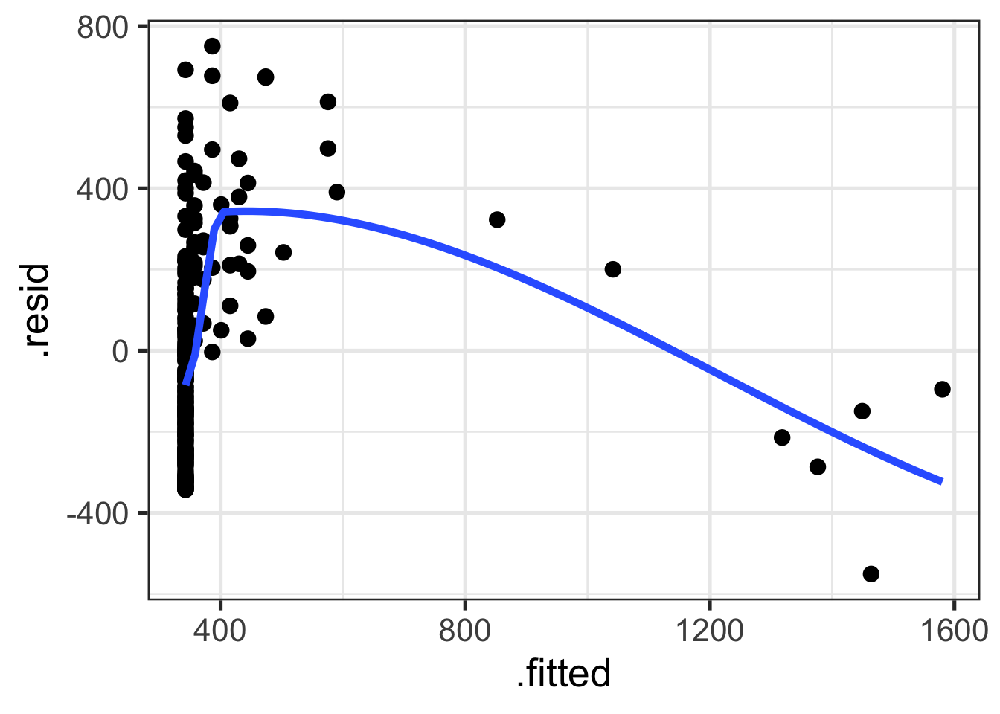
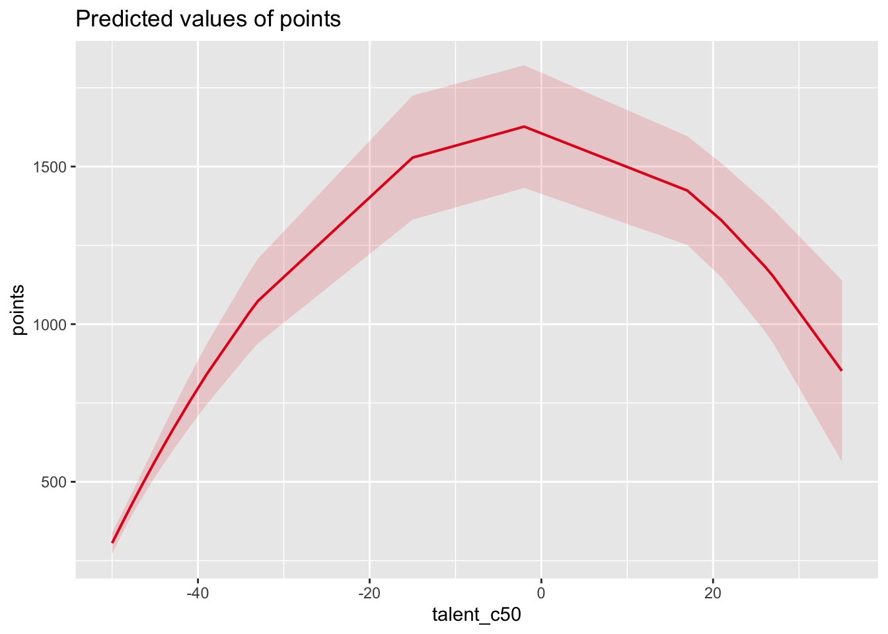
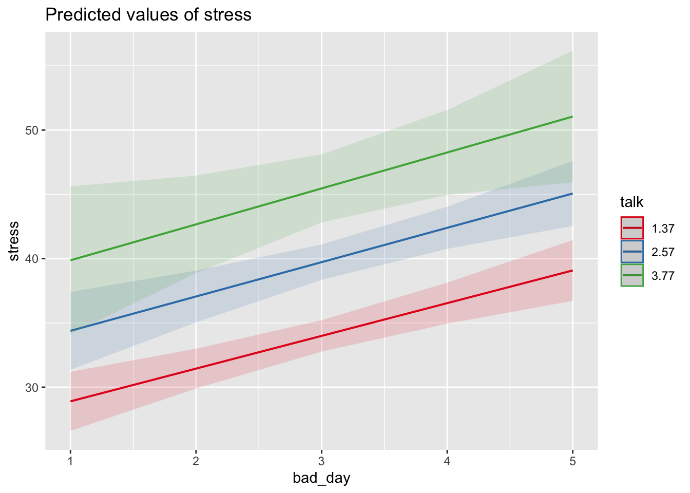
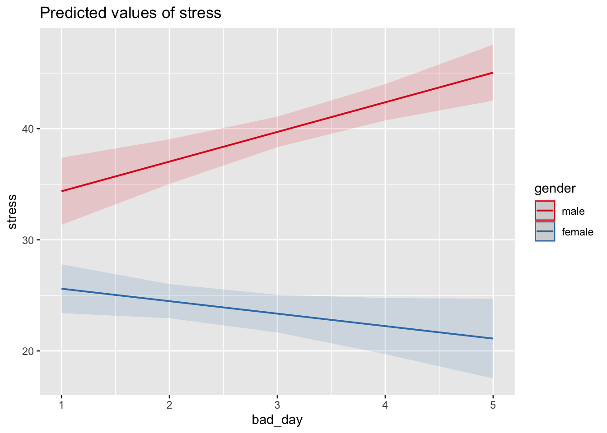
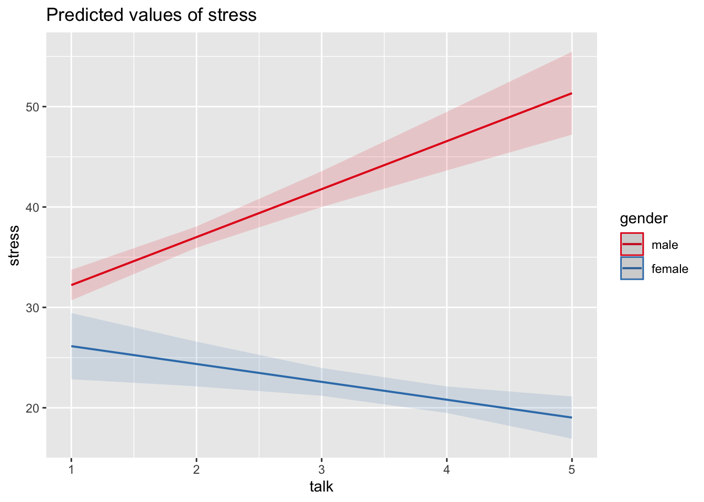
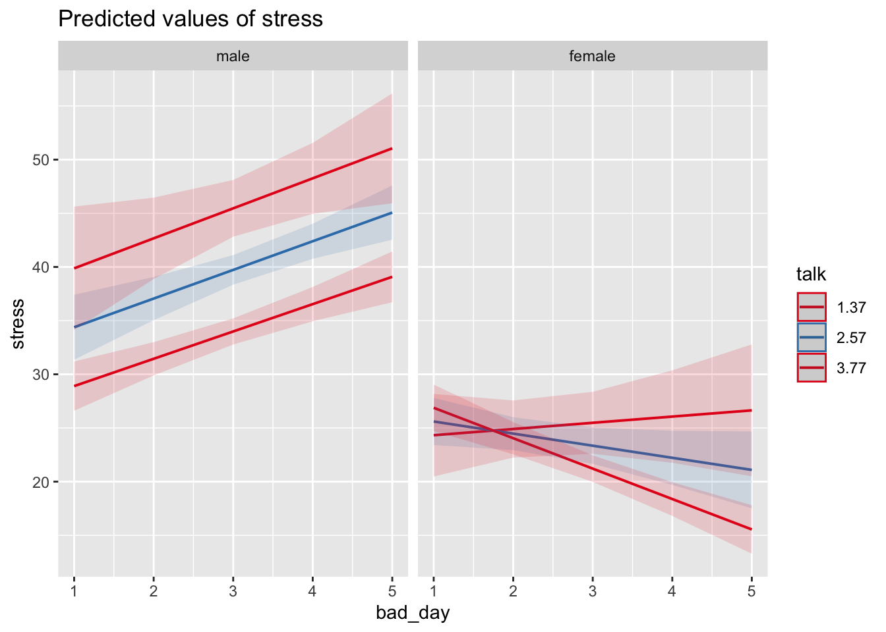
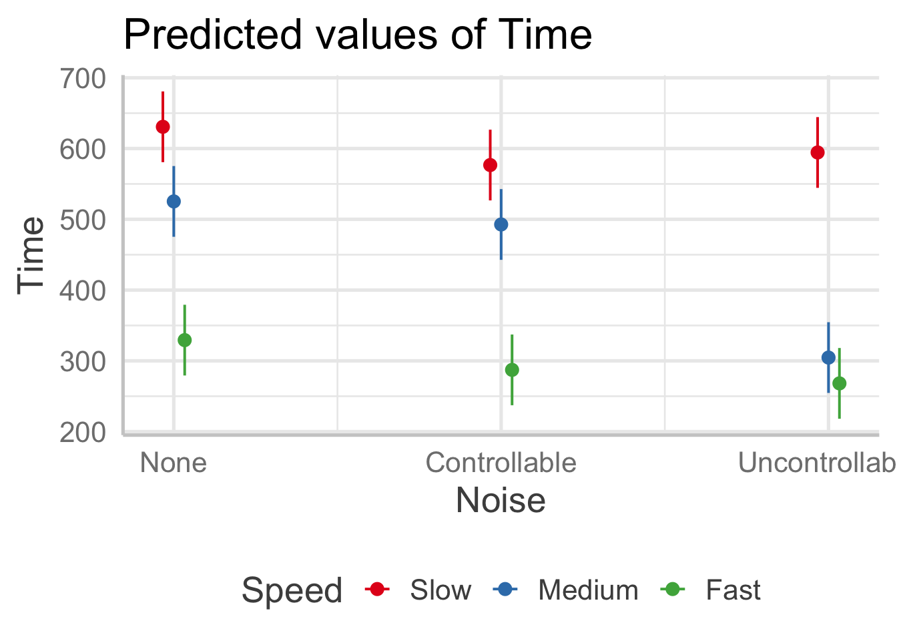
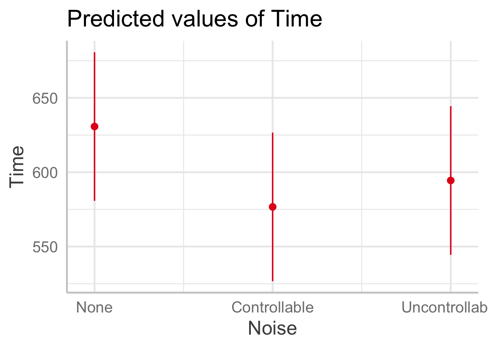
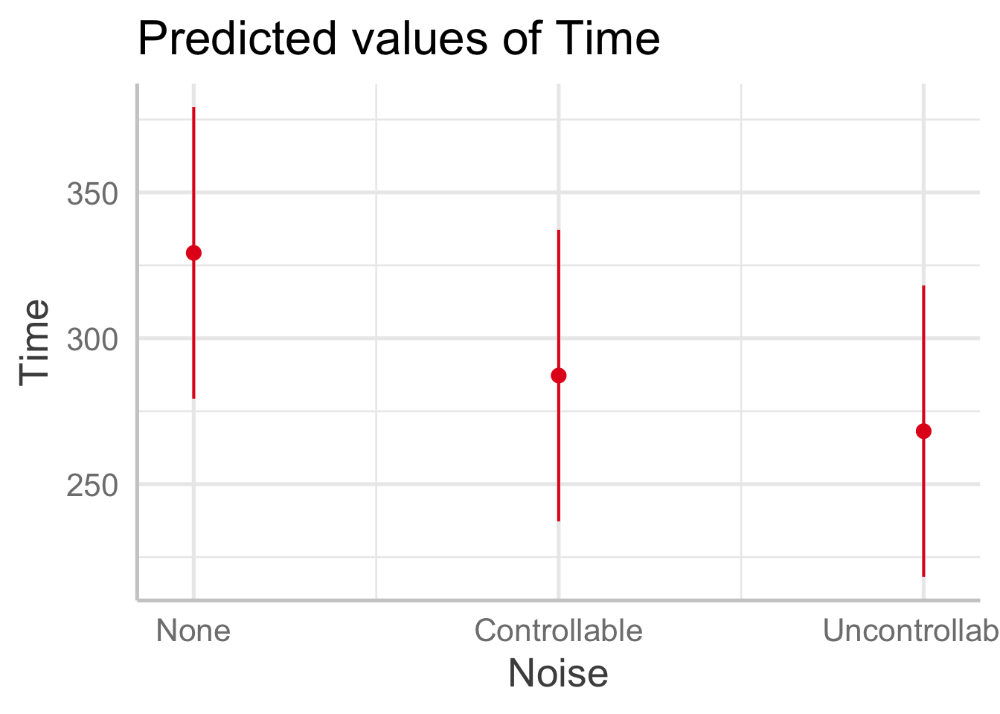

Simple slopes – the slope of Variable A at a specific level of Variable B
Power
The likelihood of finding an effect if the effect actually exists.
When calculating power for the omnibus test, use the expected multiple \(R^2\) value to calculate an effect size: \(f^2 = \frac{R^2}{1-R^2}\)
To estimate power for a single coefficient, you need to consider (1) how much variance is accounted for by just the variable and (2) how much variance you’ll account for in Y overall. \(f^2 = \frac{R^2_Y-R^2_{Y.X}}{1-R_Y^2}\)
Effect sizes (interactions)
To start our discussion on powering interaction terms, we need to first consider the effect size of an interaction.
How big can we reasonably expect an interaction to be?
Interactions are always partialled effects; that is, we examine the relationship between the product of variables X and Z only after we have controlled for X and controlled for Z. How does this affect the size of the relationship between XZ and Y?
Effect sizes (interactions)
The effect of XZ and Y will get smaller as \(X\) or \(Z\) (or both) is related to the product
The semi-partial correlation is always smaller than or equal to the zero-order correlation.
McClelland and Judd (1993)
Is it more difficult to find interaction effects in experimental studies or observational studies?
What factors make it relatively easier to find interactions in experimental work?
Influencing power in experimental studies
No measurement error of IV
don’t have to guess what condition a participant is in
measurement error is exacerbated when two variables measured with error are multiplied by each other
Experimentalists are more likely to find cross-over interactions; observational studies may be restricted to fan interactions
cross-over interactions are easier to detect than fan interactions
Influencing power in experimental studies
Experimentalists can concentrate scores on extreme ends on both X and Z
in observational studies, data tends to cluster around the mean
increases variability in both X and Z, and in XZ
Experimentalists can also force orthognality in X and Z
Experimentalists can study the full range of X in an experiment
McClelland and Judd’s simulation
For the experiment simulations, we used 2 X 2 factorial designs, with values of X and Z equal to +1 and —1 and an equal number of observations at each of the four combinations of X and Z values.
X =rep(c(-1,1), each =50)Z =rep(c(-1,1), times =50)table(X,Z)
Z
X -1 1
-1 25 25
1 25 25
McClelland and Judd’s simulation
For the field study simulations, they used values of X and Z that varied between the extreme values of +1 and —1. More specifically, in the field study simulations, values of X and Z were each sampled independently from a normal distribution with a mean of 0 and a standard deviation of 0.5. Values of X and Z were rounded to create equally spaced 9-point scales ranging from -1 to +1 because ranges in field studies are always finite and because ratings are often on scales with discrete intervals.
McClelland and Judd’s simulation
For field studies
X =rnorm(n =100, mean =0, sd = .5)Z =rnorm(n =100, mean =0, sd = .5)X =round(X/.2)*.2Z =round(Z/.2)*.2psych::describe(data.frame(X,Z), fast = T)
vars n mean sd median min max range skew kurtosis se
X 1 100 -0.05 0.5 0 -1.2 1.2 2.4 0.04 -0.41 0.05
Z 2 100 0.03 0.5 0 -1.6 1.2 2.8 -0.44 0.63 0.05
Y =0+1*X +1*Z +1*X*Z +rnorm(n =100, mean =0, sd =4)summary(lm(Y ~ X*Z))
Call:
lm(formula = Y ~ X * Z)
Residuals:
Min 1Q Median 3Q Max
-11.2002 -3.2569 -0.4427 3.1085 10.0917
Coefficients:
Estimate Std. Error t value Pr(>|t|)
(Intercept) 0.7331 0.4710 1.557 0.123
X 1.3502 0.9430 1.432 0.155
Z 1.3674 0.9615 1.422 0.158
X:Z -2.8471 2.0902 -1.362 0.176
Residual standard error: 4.679 on 96 degrees of freedom
Multiple R-squared: 0.06161, Adjusted R-squared: 0.03228
F-statistic: 2.101 on 3 and 96 DF, p-value: 0.1052
set.seed(0305)
Code
# for experimental studiessim =100ebeta_xz =numeric(length =100)et_xz =numeric(length =100)for(i in1:sim){# simulate data X =rep(c(-1,1), each =50) Z =rep(c(-1,1), times =50) Y =0+1*X +1*Z +1*X*Z +rnorm(n =100, mean =0, sd =4)#run model model =lm(Y ~ X*Z) coef =coef(summary(model))#extract coefficients beta = coef["X:Z", "Estimate"] t_val = coef["X:Z", "t value"]#save to vectors ebeta_xz[i] = beta et_xz[i] = t_val}
Code
# for observational studiesobeta_xz =numeric(length =100)ot_xz =numeric(length =100)for(i in1:sim){# simulate data X =rnorm(n =100, mean=0, sd = .5) Z =rnorm(n =100, mean=0, sd = .5) X =round(X/.2)*.2 Z =round(Z/.2)*.2 Y =0+1*X +1*Z +1*X*Z +rnorm(n =100, mean =0, sd =4)#run model model =lm(Y ~ X*Z) coef =coef(summary(model))#extract coefficients beta = coef["X:Z", "Estimate"] t_val = coef["X:Z", "t value"]#save to vectors obeta_xz[i] = beta ot_xz[i] = t_val}
In our simulation, 66% of experimental studies were statistically significant, whereas only 12% of observational studies were significant. Remember, we built our simulation based on data where there really is an interaction effect (i.e., the null is false).
McClelland and Judd: 74% and 9%
Efficiency
Efficiency = the ratio of the variance of XZ (controlling for X and Z) of a design to the best possible design (upper left corner). High efficiency is better; best efficiency is 1.
Efficiency
If the optimal design has N observations, then to have the same power, any other design needs to have N*(1/efficiency).
So a design with .06 efficiency needs \(\frac{1}{.06} = 16.67\) times the sample size to detect the effect.
Efficiency
This particular point has been “rediscovered” as recently as 2018:
you need 16 times the sample size to detect an interaction as you need for a main effect of the same size.
This generalizes to higher-order interactions as well. If you have a three-way interaction, you need 16*16 (256 times the number of people).
Observational studies: What NOT to do
Re-code X and Z into more extreme values (e.g., median splits)
while this increases variance in X and Z, it also increases measurement error
Collect a random sample and then only perform analyses on the sub sample with extreme values
reduces sample size and also generalizability
Observational studies: What NOT to do
What can be done? M&J suggest oversampling extremes and using weighted and unweighted samples
Experimental studies: What NOT to do
Be mean to field researchers
Forget about lack of external validity and generalizability
Ignore power when comparing interaction between covariate and experimental predictors (ANCOVA or multiple regression with categorical and continuous predictors)
Polynomials
Non-linear relationships
Linear lines often make bad predictions – very few processes that we study actually have linear relationships. For example, effort had diminishing returns (e.g., log functions), or small advantages early in life can have significant effects on mid-life outcones (e.g., exponentional functions). In cases where the direction of the effect is constant but changing in magnitude, the best way to handle the data is to transform a variable (usually the outcome) and run linear analyses.
log_y =log(y)lm(log_y ~ x)
Other processes represent changes in the direction of relationship – a small amount of anxiety is beneficial for performance on some tasks but too much is detrimental. When the shape of the effect includes change(s) in direction, then a polynomial term(s) may be more appropriate.
Polynomials are often a poor approx. for a non-linear effect. Correctly testing for non-linear effects usually requires (a) a lot of data and (b) making a number of assumptions about the data. Polynomial regression can be a useful tool for exploratory analysis and in cases when data are limited in terms of quantity and/or quality.
Polynomial regression
Polynomial regression is most often a form of hierarchical regressoin that systematically tests a series of higher order functions for a single variable.
Researchers hypothesized that teams with too many talented players have poor intra-team coordination and perform worse than teams with a moderate amount of talent. They looked at 208 international football teams. Talent was the percentage of players during the 2010 and 2014 World Cup Qualifications phases who also had contracts with elite club teams. Performance was the number of points the team earned during these same qualification phases.
Swaab, R.I., Schaerer, M, Anicich, E.M., Ronay, R., and Galinsky, A.D. (2014). [The too-much-talent effect: Team interdependence determines when more talent is too much or not enough.](https://www8.gsb.columbia.edu/cbs-directory/sites/cbs-directory/files/publications/Too%20much%20talent%20PS.pdf Psychological Science 25(8), 1581-1591.
Code
head(football)
country points talent
1 Spain 1485 85
2 Germany 1300 76
3 Brazil 1242 48
4 Portugal 1189 16
5 Argentina 1175 35
6 Switzerland 1149 9
Warning in simpleLoess(y, x, w, span, degree = degree, parametric = parametric,
: reciprocal condition number 0
Warning in simpleLoess(y, x, w, span, degree = degree, parametric = parametric,
: There are other near singularities as well. 212.03

Code
mod2 =lm(points ~ talent +I(talent^2), data = football)summary(mod2)
Call:
lm(formula = points ~ talent + I(talent^2), data = football)
Residuals:
Min 1Q Median 3Q Max
-384.66 -193.82 -35.34 152.11 729.66
Coefficients:
Estimate Std. Error t value Pr(>|t|)
(Intercept) 305.34402 17.62668 17.323 < 2e-16 ***
talent 54.89787 5.46864 10.039 < 2e-16 ***
I(talent^2) -0.57022 0.07499 -7.604 1.01e-12 ***
---
Signif. codes: 0 '***' 0.001 '**' 0.01 '*' 0.05 '.' 0.1 ' ' 1
Residual standard error: 236.3 on 205 degrees of freedom
Multiple R-squared: 0.4644, Adjusted R-squared: 0.4592
F-statistic: 88.87 on 2 and 205 DF, p-value: < 2.2e-16
Code
library(sjPlot)plot_model(mod2, type ="pred", terms ="talent")
Interpretation
The intercept is the predicted value of \(Y\) when \(X = 0\)
\(b_1\) coefficient is the tangent to the curve when \(X = 0\). In other words, this is the rate of change when \(X\) is equal to \(0\). If \(0\) is not a meaningful value on your \(X\), you may want to center, as this will tell you the rate of change at the mean of \(X\).
Call:
lm(formula = points ~ talent_c50 + I(talent_c50^2), data = football)
Residuals:
Min 1Q Median 3Q Max
-384.66 -193.82 -35.34 152.11 729.66
Coefficients:
Estimate Std. Error t value Pr(>|t|)
(Intercept) 1624.68872 97.18998 16.717 < 2e-16 ***
talent_c50 -2.12408 2.56568 -0.828 0.409
I(talent_c50^2) -0.57022 0.07499 -7.604 1.01e-12 ***
---
Signif. codes: 0 '***' 0.001 '**' 0.01 '*' 0.05 '.' 0.1 ' ' 1
Residual standard error: 236.3 on 205 degrees of freedom
Multiple R-squared: 0.4644, Adjusted R-squared: 0.4592
F-statistic: 88.87 on 2 and 205 DF, p-value: < 2.2e-16
Code
plot_model(model = mod2_50, type ="pred", terms ="talent_c50")

Interpretation
The \(b_2\) coefficient indexes the acceleration, which is how much the slope is going to change. More specifically, \(2 \times b_2\) is the acceleration: the rate of change in \(b_1\) for a 1-unit change in X.
You can use this to calculate the slope of the tangent line at any value of X you’re interested in: \[\large b_1 + (2\times b_2\times X)\]
The interaction term in another model would be interpreted as “how does the slope of X change as I move up in Z?” – here, we ask “how does the slope of X change as we move up in X?”
When should you use polynomial terms?
You may choose to fit a polynomial term after looking at a scatterplot of the data or looking at residual plots. A U-shaped curve may be indicative that you need to fit a quadratic form – although, as we discussed before, you may actually be measuring a different kind of non-linear relationship.
Polynomial terms should mostly be dictated by theory – if you don’t have a good reason for thinking there will be a change in sign, then a polynomial is not right for you.
Three-way interactions and beyond
Regression equation
\[\tiny \hat{Y} = b_{0} + b_{1}X + b_{2}Z + b_{3}W + b_{4}XZ + b_{5}XW + b_{6}ZW + b_{7}XZW\] The three-way interaction qualifies the three main effects (and any two-way interactions).
Like a two-way interaction, the three-way interaction is a conditional effect. And it is symmetrical, meaning there are several equally correct ways of interpreting it.
How do we describe a 3-way ANOVA?
A two-way (A x B) interaction means that the magnitude of one main effect (e.g., A main effect) depends on levels of the other variable (B). But, it is equally correct to say that the magnitude of the B main effect depends on levels of A. In regression, we refer to these as conditional effects and in ANOVA, they are called simple main effects.
A three-way interaction means that the magnitude of one two-way interaction (e.g., A x B) depends on the levels of the remaining variable (C).
A three-way interaction means that the magnitude of one two-way interaction (e.g., A x B) depends on the levels of the remaining variable (C).
It is equally correct to say that the magnitude of the A x C interaction depend on levels of B. Or, that the magnitude of the B x C interaction depends on levels of A. These are known as simple interaction effects.
Warning in FUN(newX[, i], ...): no non-missing arguments to min; returning Inf
Warning in FUN(newX[, i], ...): no non-missing arguments to max; returning -Inf
vars n mean sd median min max range skew kurtosis se
gender 1 150 NaN NA NA Inf -Inf -Inf NA NA NA
bad_day 2 150 2.95 1.29 3 1 5 4 0.03 -1.11 0.11
talk 3 150 2.57 1.20 2 1 5 4 0.32 -0.94 0.10
stress 4 150 30.15 10.00 30 1 51 50 -0.03 -0.56 0.82
Code
table(stress_data$gender)
female male
67 83
Code
mod_stress =lm(stress ~ bad_day*talk*gender, data = stress_data)summary(mod_stress)
plot_model(mod_stress, type ="int", mdrt.values ="meansd")
Some of the focal terms are of type `character`. This may lead to
unexpected results. It is recommended to convert these variables to
factors before fitting the model.
The following variables are of type character: `gender`
Some of the focal terms are of type `character`. This may lead to
unexpected results. It is recommended to convert these variables to
factors before fitting the model.
The following variables are of type character: `gender`
Some of the focal terms are of type `character`. This may lead to
unexpected results. It is recommended to convert these variables to
factors before fitting the model.
The following variables are of type character: `gender`
[[1]]

[[2]]

[[3]]

[[4]]

As a reminder, centering will change all but the highest-order terms in a model.
3-way (and higher) interactions are incredibly difficult to interpret, in part because they represent incredibly complicated processes. If you have a solid theoretical rationale for conducting a 3-day interaction, be sure you’ve collected enough subjects to power your test.
Especially with small samples, three-way interactions may be the result of a few outliers skewing a regression line. If you have stumbled upon a three-way interaction during exploratory analyses, be careful. This is far more likely to be a result of over-fitting than uncovering a true underlying process.
Use at least one nominal moderator (ideally with only 2 levels), instead of all continuous moderators. This allows you to examine the 2-way interaction at each level of the nominal moderator, esp if one moderator is experimenter manipulated, which increases the likelihood of balanced conditions.
Code
library(car) fit =lm(Time~Speed*Noise, data = Data)summary(aov(fit))
contrast estimate SE df t.ratio p.value
Slow None - Medium None 105.4 35.8 171 2.944 0.0553
Slow None - Fast None 301.4 35.8 171 8.418 <.0001
Slow None - Slow Controllable 54.1 35.8 171 1.509 1.0000
Slow None - Medium Controllable 138.0 35.8 171 3.854 0.0026
Slow None - Fast Controllable 343.5 35.8 171 9.592 <.0001
Slow None - Slow Uncontrollable 36.3 35.8 171 1.013 1.0000
Slow None - Medium Uncontrollable 326.1 35.8 171 9.106 <.0001
Slow None - Fast Uncontrollable 362.6 35.8 171 10.124 <.0001
Medium None - Fast None 196.0 35.8 171 5.473 <.0001
Medium None - Slow Controllable -51.4 35.8 171 -1.435 1.0000
Medium None - Medium Controllable 32.6 35.8 171 0.910 1.0000
Medium None - Fast Controllable 238.1 35.8 171 6.648 <.0001
Medium None - Slow Uncontrollable -69.2 35.8 171 -1.931 0.6615
Medium None - Medium Uncontrollable 220.7 35.8 171 6.162 <.0001
Medium None - Fast Uncontrollable 257.1 35.8 171 7.180 <.0001
Fast None - Slow Controllable -247.4 35.8 171 -6.908 <.0001
Fast None - Medium Controllable -163.4 35.8 171 -4.564 0.0002
Fast None - Fast Controllable 42.0 35.8 171 1.174 1.0000
Fast None - Slow Uncontrollable -265.2 35.8 171 -7.405 <.0001
Fast None - Medium Uncontrollable 24.7 35.8 171 0.689 1.0000
Fast None - Fast Uncontrollable 61.1 35.8 171 1.707 0.9867
Slow Controllable - Medium Controllable 84.0 35.8 171 2.344 0.2627
Slow Controllable - Fast Controllable 289.4 35.8 171 8.082 <.0001
Slow Controllable - Slow Uncontrollable -17.8 35.8 171 -0.496 1.0000
Slow Controllable - Medium Uncontrollable 272.1 35.8 171 7.597 <.0001
Slow Controllable - Fast Uncontrollable 308.5 35.8 171 8.615 <.0001
Medium Controllable - Fast Controllable 205.5 35.8 171 5.738 <.0001
Medium Controllable - Slow Uncontrollable -101.7 35.8 171 -2.841 0.0707
Medium Controllable - Medium Uncontrollable 188.1 35.8 171 5.252 <.0001
Medium Controllable - Fast Uncontrollable 224.6 35.8 171 6.271 <.0001
Fast Controllable - Slow Uncontrollable -307.2 35.8 171 -8.579 <.0001
Fast Controllable - Medium Uncontrollable -17.4 35.8 171 -0.486 1.0000
Fast Controllable - Fast Uncontrollable 19.1 35.8 171 0.533 1.0000
Slow Uncontrollable - Medium Uncontrollable 289.8 35.8 171 8.093 <.0001
Slow Uncontrollable - Fast Uncontrollable 326.3 35.8 171 9.111 <.0001
Medium Uncontrollable - Fast Uncontrollable 36.5 35.8 171 1.018 1.0000
P value adjustment: holm method for 36 tests
In sjPlot(), predicted values are the expected value of Y given all possible values of X, at specific values of M. If you don’t give it all of M, it will choose every possible value.
Code
library(sjPlot)plot_model(fit, type ="pred", terms =c("Noise", "Speed")) +theme_sjplot(base_size =20) +theme(legend.position ="bottom")

In sjPlot(), predicted values are the expected value of Y given all possible values of X, at specific values of M. If you don’t specify levels of M, it will choose the lowest possible value.
Code
library(sjPlot)plot_model(fit, type ="pred", terms =c("Noise")) +theme_sjplot(base_size =20) +theme(legend.position ="bottom")

In sjPlot(), predicted values are the expected value of Y given all possible values of X, at specific values of M. If you don’t specify levels of M, it will choose the lowest possible value.
Code
library(sjPlot)plot_model(fit, type ="pred", terms =c("Noise", "Speed[Fast]")) +theme_sjplot(base_size =20) +theme(legend.position ="bottom")

In sjPlot(), estimated marginal means are the expected value of Y given all possible values of X, ignoring M.
Code
library(sjPlot)plot_model(fit, type ="emm", terms =c("Noise")) +theme_sjplot(base_size =20) +theme(legend.position ="bottom")
NOTE: Results may be misleading due to involvement in interactions